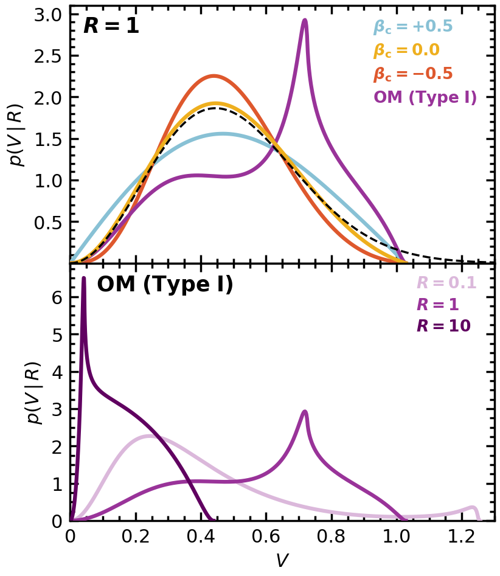
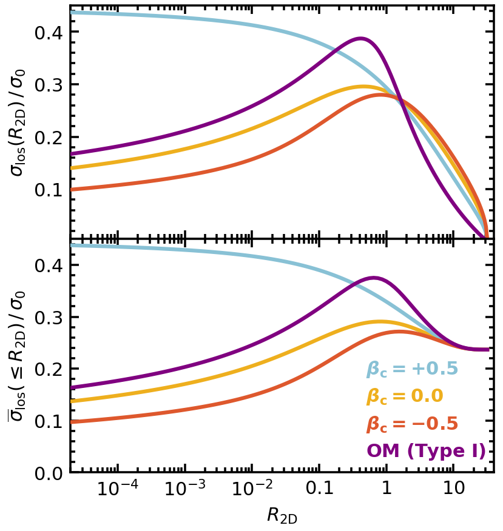
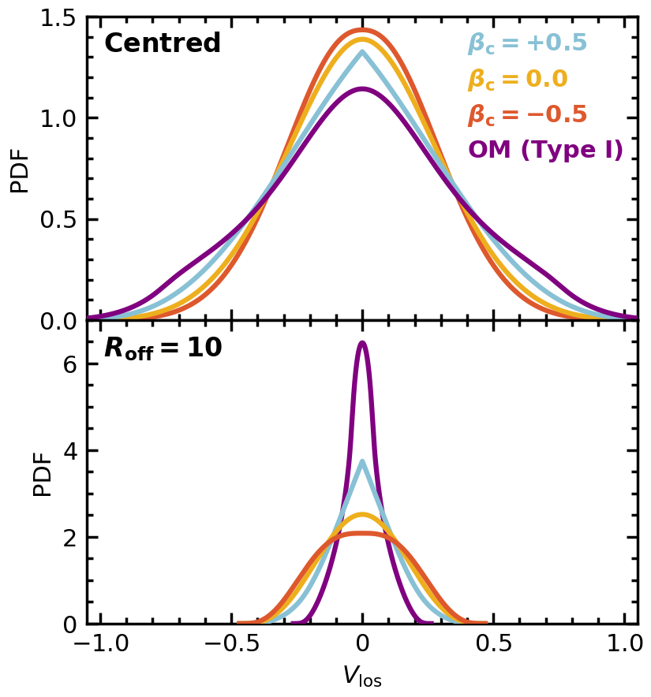

Local and line-of-sight velocity distributions#
This notebook makes Figures 13, 15 and 16 of the paper. The whole notebook takes about two hours on one 32-core node, almost all of it the aperture averages of Fig. 15.
The models: an NFW halo truncated at \(\mathcal{Z}_{\rm t} = k_{\rm t} = 0.165\) (Method I, isotropic), and three Method II members on its density profile, \(\beta_{\rm c} = +0.5\), \(\beta_{\rm c} = -0.5\) and the Osipkov-Merritt Type I model with \(R_{\rm a} = 1\), all in the model’s internal units (the scale radius is 1, velocities in units of \(\sigma_0\)).
Each model’s LosTable is built once, below, and every figure reads it: Fig. 13 the local velocity distribution (pp.pdf_v), Fig. 15 the line-of-sight dispersion and its aperture average (pp.sigma_los, pp.sigma_los_aperture), Fig. 16 the line-of-sight velocity distribution in an aperture (pp.aperture_losvd). Everything here is computed by the package’s public calls; nothing is read from stored data.
The \(\beta_{\rm c} = -0.5\) table is built with pp.Settings(write_anyway=True): its last row, at \(R = 31.88\), where the surface density reaches zero and the line of sight has no mass to converge on, is the one check above \(10^{-2}\), and it lies outside every radius these figures read.
Per-call accuracy messages are quieted; the summary after each figure’s models lists every model’s tier.
import os
os.environ["TF_CPP_MIN_LOG_LEVEL"] = "3" # before any JAX import: no C++ log lines from XLA
import logging
import math
import warnings
import pianistpy as pp
# The figures of the paper are made with ver. 1.0.0 of the package; any other installed version stops the notebook here.
PIANISTPY_PIN = "1.0.0"
print(f"pianistpy {pp.__version__}")
if pp.__version__ != PIANISTPY_PIN:
raise RuntimeError(
f"These figures are made with pianistpy {PIANISTPY_PIN}; the installed version is {pp.__version__}."
)
# The package reports each result's accuracy twice per call: a line of the pianistpy log and Python's AccuracyWarning.
# set_verbosity("quiet") hides the log's INFO line of a result in the band "recorded"; the pianistpy logger set to
# ERROR also hides the log's WARNING line of a result in the band "warned"; the filter hides the AccuracyWarning.
# The summary after each figure's models prints every model's tier in place of those per-call messages.
pp.set_verbosity("quiet")
logging.getLogger("pianistpy").setLevel(logging.ERROR)
warnings.filterwarnings("ignore", category=pp.AccuracyWarning)
def tier_line(label, result):
"""One summary line for a result: its label, its report's tier, and the report's worst check with that check's error.
The worst check is the check of the highest tier level; among checks of one level, the check with the largest error.
A result whose tier is carried from the Method I model's report, and not from any of the result's own checks, says so.
"""
if result is None:
return f"{label:34s} not built: the package's exception is printed above"
report = result.validation
def rank(key):
error = report.checks[key].error
return (report.checks[key].level, error if not math.isnan(error) else -math.inf)
worst = max(report.keys, key=rank)
own_level = report.checks[worst].level
origin = ", the tier carried from the Method I model's report" if report.parents_level > own_level else ""
return (f"{label:34s} tier {report.tier:9s} worst check {worst} "
f"{report.checks[worst].error:.2e}{origin}")
pianistpy 1.0.0
import numpy as np
import pianistpy as pp
Z_T = 0.16502882092587715 # the truncation energy k_t of the figure's NFW halo
truncated = pp.solve(
pp.Component(pp.DoublePowerLaw.nfw(), pp.Anisotropy()), pp.Truncation(k_t=Z_T)
)
models = [
pp.solve(pp.Component(truncated.profile, pp.Anisotropy(beta_c=0.5))),
# built regardless of its last row's check (see above), its tier carried
pp.solve(
pp.Component(truncated.profile, pp.Anisotropy(beta_c=-0.5)),
settings=pp.Settings(write_anyway=True),
),
pp.solve(pp.Component(truncated.profile, pp.Anisotropy(r_a=1.0, kind="I"))),
]
# in the order of the plotting code below: isotropic, +0.5, -0.5, OM Type I
tables = [pp.LosTable(m) for m in [truncated] + models]
print("Figures 13, 15 and 16: the four models and the LosTable of each model")
for label, model, table in zip(
["isotropic, Method I", "beta_c = +0.5", "beta_c = -0.5", "OM Type I, R_a = 1"], [truncated] + models, tables
):
print(tier_line(label, model))
print(tier_line(label + ", LosTable", table))
Figures 13, 15 and 16: the four models and the LosTable of each model
isotropic, Method I tier silent worst check round_trip 4.91e-08
isotropic, Method I, LosTable tier silent worst check certificate 8.92e-08
beta_c = +0.5 tier silent worst check round_trip 2.23e-07
beta_c = +0.5, LosTable tier silent worst check second_moment 8.27e-08
beta_c = -0.5 tier silent worst check poisson_residual 4.77e-08
beta_c = -0.5, LosTable tier silent worst check second_moment 2.94e-07
OM Type I, R_a = 1 tier silent worst check round_trip 4.91e-08
OM Type I, R_a = 1, LosTable tier silent worst check second_moment 8.67e-08
Figure 13: local velocity distribution#
The probability density of the velocity \(V = |\mathbf{v}|\) at 3D radius \(R\) (pp.pdf_v). Top: the four models at \(R = 1\), with the Maxwell-Boltzmann distribution whose peak sits at the isotropic model’s. Bottom: the Osipkov-Merritt Type I model at \(R = 0.1\), 1 and 10.
The distribution at 500 velocities from \(10^{-7}\) to \(1 - 10^{-7}\) times the escape velocity at the radius, the grid of the paper’s tables.
# The arXiv figure's tables sample each p(V | R) at 500 velocities from 1e-7 V_esc(R) to (1 - 1e-7) V_esc(R),
# V_esc(R) = sqrt(2 P(R)) the escape velocity at the radius; the same grid here, the values from pp.pdf_v.
def velocity_grid(r):
v_esc = float(np.sqrt(2.0 * truncated.profile.potential(np.array([r]))[0]))
return v_esc, np.linspace(v_esc * 1e-7, v_esc * (1.0 - 1e-7), 500)
v_esc_1, v_1 = velocity_grid(1.0)
print(f"V_esc(R = 1) = {v_esc_1:.6e}")
p_at_1 = [np.asarray(pp.pdf_v(t, 1.0, v_1)) for t in tables]
v_om, p_om = [], []
for r in (0.1, 1.0, 10.0):
v_esc, v_r = velocity_grid(r)
print(f"V_esc(R = {r}) = {v_esc:.6e}")
v_om.append(v_r)
p_om.append(np.asarray(pp.pdf_v(tables[3], r, v_r)))
V_esc(R = 1) = 1.028643e+00
V_esc(R = 0.1) = 1.255458e+00
V_esc(R = 1.0) = 1.028643e+00
V_esc(R = 10.0) = 4.391825e-01
The figure.
# the arXiv figure's script, with the frames and ticks at their printed size
# before its savefig, which set every axes' frame and ticks as printed for its slot (f 0.99, column).
#!/usr/bin/env python3
"""
The script of Fig. 13.
"""
import numpy as np
import matplotlib
import matplotlib.pyplot as plt
import matplotlib.ticker as ticker
from matplotlib.lines import Line2D
import matplotlib.colors as mcolors
# DejaVu Sans for text and math, as in Fig. 7
# ============================================================
# USER PARAMETERS
# ============================================================
OUTPUT_FIG = "V_shell_Comparison.pdf"
SIGMA_0 = 1.0
XMIN = 0.0
XMAX = 1.3
YMIN_TOP = 0.001
YMAX_TOP = 3.1 # the OM I peak at R = 1 is 2.93 (V* = sqrt(2 Psi / (1 + R^2 / R_a^2)))
YMIN_BOT = 0.0
YMAX_BOT = 6.9 # the OM I peak at R = 10 is 6.53 at V* = 0.044
# ── OM purple shade factors ──────────────────────────────────────────────
def _lighten(hex_color, factor=0.45):
rgb = np.array(mcolors.to_rgb(hex_color))
return mcolors.to_hex(rgb + factor * (1.0 - rgb))
def _darken(hex_color, factor=0.45):
rgb = np.array(mcolors.to_rgb(hex_color))
return mcolors.to_hex(rgb * (1.0 - factor))
_OM_BASE_HEX = _lighten("#800080",0.2)
COLOR_ISO = "#eeaf1e"
COLOR_BP5 = "#88c1d5"
COLOR_BM5 = "#de582d"
COLOR_OM = _OM_BASE_HEX
COLOR_MB = "#000000"
COLOR_OM_R01 = _lighten("#800080", 0.72)
COLOR_OM_R1 = _OM_BASE_HEX
COLOR_OM_R10 = _darken("#800080", 0.25)
# ── Legend / curve labels ────────────────────────────────────────────────
LABEL_BP5 = r'$\boldsymbol{\beta}_{\mathbf{c}} \mathbf{= +0.5}$'
LABEL_ISO = r'$\boldsymbol{\beta}_{\mathbf{c}} \mathbf{= 0.0}$'
LABEL_BM5 = r'$\boldsymbol{\beta}_{\mathbf{c}} \mathbf{= -0.5}$'
LABEL_OM = r'$\mathbf{OM\ (Type\ I)}$'
LABEL_R01 = r'$\boldsymbol{R}\mathbf{ = 0.1}$'
LABEL_R1 = r'$\boldsymbol{R}\mathbf{ = 1}$'
LABEL_R10 = r'$\boldsymbol{R}\mathbf{ = 10}$'
# ── Global font / frame sizes ────────────────────────────────────────────
FONTSIZE_AXIS_LABEL = 22
FONTSIZE_TICK_LABEL = 22
FONTSIZE_LEGEND = 19
FRAME_LINEWIDTH = 2.5
TICK_LINEWIDTH = 2.5
TICK_MAJOR_LENGTH = 10.0
TICK_MINOR_LENGTH = 6.0
CURVE_LINEWIDTH = 4.5
MB_LINEWIDTH = 2.5
# ── TOP PANEL: "R = 1" annotation ───────────────────────────────────────
# Position: top-right corner (axes fraction).
# ANNOT_TOP_R1_Y_SHIFT moves the label up (+) or down (-) from the default.
ANNOT_TOP_R1_FONTSIZE = 25 # decoupled from FONTSIZE_LEGEND
ANNOT_TOP_R1_Y_SHIFT = 0.00 # additional vertical shift (axes fraction)
# ── TOP PANEL: curve-label legend vertical shift ─────────────────────────
# Positive = up, negative = down (axes fraction added to bbox_to_anchor y).
ANNOT_TOP_LEGEND_Y_SHIFT = 0.022
# ── BOTTOM PANEL: "OM (Type I)" annotation ──────────────────────────────
ANNOT_BOT_OM_FONTSIZE = 25 # decoupled from FONTSIZE_LEGEND
ANNOT_BOT_OM_Y_SHIFT = 0.00 # additional vertical shift (axes fraction)
# ── BOTTOM PANEL: curve-label legend vertical shift ──────────────────────
ANNOT_BOT_LEGEND_Y_SHIFT = 0.019
# ============================================================
# LOAD DATA
# ============================================================
V_comp = v_1 / SIGMA_0
p_iso = p_at_1[0] * SIGMA_0
p_bp5 = p_at_1[1] * SIGMA_0
p_bm5 = p_at_1[2] * SIGMA_0
p_om_r1 = p_at_1[3] * SIGMA_0
V_r01 = v_om[0] / SIGMA_0; p_r01 = p_om[0] * SIGMA_0
V_r1 = v_om[1] / SIGMA_0; p_r1 = p_om[1] * SIGMA_0
V_r10 = v_om[2] / SIGMA_0; p_r10 = p_om[2] * SIGMA_0
# ============================================================
# MAXWELL-BOLTZMANN — match peak LOCATION to isotropic
# ============================================================
def maxwell_boltzmann(v, a):
return (4.0 / np.sqrt(np.pi)) * (v**2 / a**3) * np.exp(-(v / a)**2)
peak_iso_idx = int(np.argmax(p_iso))
peak_iso_v = float(V_comp[peak_iso_idx])
peak_iso_val = float(p_iso[peak_iso_idx])
a_mb = peak_iso_v
mb_peak_h = (4.0 / np.sqrt(np.pi)) * np.exp(-1.0) / a_mb
print(f" MB match: peak LOCATION")
print(f" iso mode : v = {peak_iso_v:.6e} height = {peak_iso_val:.6e}")
print(f" MB mode : v = {a_mb:.6e} height = {mb_peak_h:.6e}")
print(f" height ratio (iso/MB) : {peak_iso_val/mb_peak_h:.4f}")
V_mb = np.linspace(0.0, XMAX, 2000)
p_mb = maxwell_boltzmann(V_mb, a_mb)
# ============================================================
# FIGURE SETUP
# ============================================================
fig, (ax_top, ax_bot) = plt.subplots(
2, 1,
sharex=True,
figsize=(9, 11),
gridspec_kw={'hspace': 0.0}
)
def style_ax(ax):
for spine in ax.spines.values():
spine.set_linewidth(FRAME_LINEWIDTH)
ax.tick_params(
which='major', direction='in',
length=TICK_MAJOR_LENGTH, width=TICK_LINEWIDTH,
labelsize=FONTSIZE_TICK_LABEL,
top=True, bottom=True, left=True, right=True
)
ax.tick_params(
which='minor', direction='in',
length=TICK_MINOR_LENGTH, width=TICK_LINEWIDTH,
top=True, bottom=True, left=True, right=True
)
# ============================================================
# X-AXIS TICKS — "0.0" -> "0"
# ============================================================
major_x = np.arange(0.0, XMAX + 0.01, 0.2)
minor_x = np.arange(0.0, XMAX + 0.01, 0.05)
for ax in (ax_top, ax_bot):
ax.set_xticks(major_x)
ax.set_xticks(minor_x, minor=True)
ax_top.set_xticklabels([])
def _fmt_x(v):
"""Format x tick: '0' for exactly zero, else one decimal place."""
return '0' if abs(v) < 1e-9 else f'{v:.1f}'
ax_bot.set_xticklabels([_fmt_x(v) for v in major_x],
fontsize=FONTSIZE_TICK_LABEL)
# ============================================================
# TOP PANEL
# ============================================================
ax_top.plot(V_comp, p_bp5,
color=COLOR_BP5, linewidth=CURVE_LINEWIDTH, zorder=3)
ax_top.plot(V_comp, p_bm5,
color=COLOR_BM5, linewidth=CURVE_LINEWIDTH, zorder=3)
ax_top.plot(V_comp, p_om_r1,
color=COLOR_OM, linewidth=CURVE_LINEWIDTH, zorder=4)
ax_top.plot(V_comp, p_iso,
color=COLOR_ISO, linewidth=CURVE_LINEWIDTH, zorder=5)
ax_top.plot(V_mb, p_mb,
color=COLOR_MB, linewidth=MB_LINEWIDTH,
linestyle='--', zorder=6)
ax_top.set_xlim(XMIN, XMAX)
ax_top.set_ylim(YMIN_TOP, YMAX_TOP)
ax_top.set_ylabel(r'$p(V\,|\,R)$',
fontsize=FONTSIZE_AXIS_LABEL, labelpad=8)
style_ax(ax_top)
ax_top.yaxis.set_minor_locator(ticker.MultipleLocator(0.1))
ax_top.yaxis.set_major_locator(ticker.MultipleLocator(0.5))
# Curve-label legend (top panel) — vertical shift applied to anchor y
_top_leg_y = 1.0 + ANNOT_TOP_LEGEND_Y_SHIFT
top_labels = [LABEL_BP5, LABEL_ISO, LABEL_BM5, LABEL_OM]
top_colors = [COLOR_BP5, COLOR_ISO, COLOR_BM5, COLOR_OM]
blank_top = [Line2D([], [], linestyle='none') for _ in top_labels]
leg_top = ax_top.legend(
blank_top, top_labels,
loc='upper right',
bbox_to_anchor=(1.0, _top_leg_y),
bbox_transform=ax_top.transAxes,
fontsize=FONTSIZE_LEGEND,
frameon=False,
handlelength=0, handletextpad=0,
borderpad=0.6, labelspacing=0.35,
)
for txt, col in zip(leg_top.get_texts(), top_colors):
txt.set_color(col)
# "R = 1" annotation — top-right, with independent fontsize + y-shift
_r1_y = 0.96 + ANNOT_TOP_R1_Y_SHIFT
ax_top.text(0.03, _r1_y, r'$\boldsymbol{R}\mathbf{ = 1}$',
transform=ax_top.transAxes,
fontsize=ANNOT_TOP_R1_FONTSIZE,
va='top', ha='left', color='black')
# ============================================================
# BOTTOM PANEL
# ============================================================
ax_bot.plot(V_r01, p_r01,
color=COLOR_OM_R01, linewidth=CURVE_LINEWIDTH, zorder=3)
ax_bot.plot(V_r1, p_r1,
color=COLOR_OM_R1, linewidth=CURVE_LINEWIDTH, zorder=4)
ax_bot.plot(V_r10, p_r10,
color=COLOR_OM_R10, linewidth=CURVE_LINEWIDTH, zorder=5)
ax_bot.set_xlim(XMIN, XMAX)
ax_bot.set_ylim(YMIN_BOT, YMAX_BOT)
ax_bot.set_xlabel(r'$V$',
fontsize=FONTSIZE_AXIS_LABEL, labelpad=8)
ax_bot.set_ylabel(r'$p(V\,|\,R)$',
fontsize=FONTSIZE_AXIS_LABEL, labelpad=8)
style_ax(ax_bot)
ax_bot.yaxis.set_minor_locator(ticker.MultipleLocator(0.25))
ax_bot.yaxis.set_major_locator(ticker.MultipleLocator(1.0))
# Curve-label legend (bottom panel) — vertical shift applied to anchor y
_bot_leg_y = 1.0 + ANNOT_BOT_LEGEND_Y_SHIFT
bot_labels = [LABEL_R01, LABEL_R1, LABEL_R10]
bot_colors = [COLOR_OM_R01, COLOR_OM_R1, COLOR_OM_R10]
blank_bot = [Line2D([], [], linestyle='none') for _ in bot_labels]
leg_bot = ax_bot.legend(
blank_bot, bot_labels,
loc='upper right',
bbox_to_anchor=(1.0, _bot_leg_y),
bbox_transform=ax_bot.transAxes,
fontsize=FONTSIZE_LEGEND,
frameon=False,
handlelength=0, handletextpad=0,
borderpad=0.6, labelspacing=0.35,
)
for txt, col in zip(leg_bot.get_texts(), bot_colors):
txt.set_color(col)
# two leading spaces so the label clears the R = 0.1 curve
# "OM (Type I)" annotation — top-right, black, with independent fontsize + y-shift
_om_y = 0.96 + ANNOT_BOT_OM_Y_SHIFT
ax_bot.text(0.03, _om_y, r'$\mathbf{\ \ OM\ (Type\ I)}$',
transform=ax_bot.transAxes,
fontsize=ANNOT_BOT_OM_FONTSIZE,
va='top', ha='left', color='black')
# ============================================================
# SAVE
# ============================================================
import os as _fs_os, sys as _fs_sys
_fs_sys.path.insert(0, 'scripts')
import print_frame_fs as _fs_pf # frames and ticks at their printed size
_fs_s = _fs_pf.apply(fig, f=0.99, slot='column', width_pt=float(_fs_os.environ.get('PRINT_WIDTH_PT', 586.1)))
print(f'[fs] printed scale s = {_fs_s:.4f} (f 0.99, slot column, W_fig {_fs_os.environ.get("PRINT_WIDTH_PT", 586.1)} pt)', flush=True)
fig.savefig(OUTPUT_FIG, bbox_inches='tight', dpi=300)
print(f" [SAVE] figure -> {OUTPUT_FIG}")
plt.show()
MB match: peak LOCATION
iso mode : v = 4.452641e-01 height = 1.923733e+00
MB mode : v = 4.452641e-01 height = 1.864545e+00
height ratio (iso/MB) : 1.0317
[fs] printed scale s = 0.4106 (f 0.99, slot column, W_fig 586.1 pt)
[SAVE] figure -> V_shell_Comparison.pdf

Figure 15: line-of-sight velocity dispersion#
Top: the line-of-sight velocity dispersion \(\sigma_{\rm los}(R_{\rm 2D})\) at projected radii (pp.sigma_los). Bottom: its average inside a centered circle of radius \(R_{\rm 2D}\), \(\overline{\sigma}_{\rm los}(\leq R_{\rm 2D})\) (pp.sigma_los_aperture).
The dispersion at 316 projected radii, and its average inside centered circles of 100 radii, both log-spaced from \(10^{-4.7}\) to the last projected radius of the line-of-sight table.
import time
t_cell = time.time()
# sigma_los at 316 and the aperture average at 100 log-spaced radii (about 16 a decade), from 10^-4.7 (the figure's
# left edge) to the projected table's last row; each aperture radius is one sigma_los_aperture call.
los, ape = [], []
for table in tables:
r_last = float(table.projected.r_2d[-1]) # the projected table's last row
R_2D = np.geomspace(10.0**-4.7, r_last, 316)
los.append((R_2D, np.asarray(pp.sigma_los(table, R_2D))))
R_ape = np.geomspace(10.0**-4.7, r_last, 100)
sig_bar = np.array([pp.sigma_los_aperture(table, pp.Aperture.circle(r)) for r in R_ape])
ape.append((R_ape, sig_bar))
print(f"last projected row {r_last:.6f}; aperture radii {R_ape[0]:.3e} to {R_ape[-1]:.6f}")
print(f"cell time {time.time() - t_cell:.0f} s")
last projected row 31.875380; aperture radii 1.995e-05 to 31.875380
last projected row 31.875380; aperture radii 1.995e-05 to 31.875380
last projected row 31.875380; aperture radii 1.995e-05 to 31.875380
last projected row 31.875380; aperture radii 1.995e-05 to 31.875380
cell time 6391 s
The figure.
"""Fig. 15 (LOS_sigma.pdf) by the arXiv figure's script, with Fig. 7's fonts and the frames, ticks and tick-label gap as printed."""
import numpy as np
import matplotlib
import matplotlib.pyplot as plt
import matplotlib.ticker as ticker
from matplotlib.lines import Line2D
import math
# DejaVu Sans for text and math, as in Fig. 7
# ============================================================
# USER PARAMETERS
# ============================================================
# --- input curves: list of ((R_2D, sigma_los), (R_ape, sigma_bar), label) tuples, computed above ---
MODELS = [
(los[0], ape[0], "Isotropic"),
(los[1], ape[1], "beta0p5"),
(los[2], ape[2], "betam0p5"),
(los[3], ape[3], "OM Ra1"),
]
# --- legend labels (one per model, in order matching MODELS) ---
LEGEND_LABELS = [
r'$\boldsymbol{\beta}_{\mathbf{c}} \mathbf{= 0.0}$',
r'$\boldsymbol{\beta}_{\mathbf{c}} \mathbf{= +0.5}$',
r'$\boldsymbol{\beta}_{\mathbf{c}} \mathbf{= -0.5}$',
r'$\mathbf{OM\ (Type\ I)}$',
]
# --- legend settings ---
FONTSIZE_LEGEND = 22
LEGEND_ORDER = [1, 0, 2, 3] # indices into MODELS list, top to bottom
LEGEND_X_SHIFT = 0.03 # positive = right, negative = left (axes fraction)
LEGEND_Y_SHIFT = -0.04 # positive = up, negative = down (axes fraction)
# --- output ---
OUTPUT_FIG = "LOS_sigma.pdf"
# --- x-axis (in log10(R) units) ---
XMIN = -4.7
XMAX = 1.6
# --- y-axis top panel (sigma_los radial profile) ---
YMIN_TOP = 0.005
YMAX_TOP = 0.45
# --- y-axis bottom panel (aperture-averaged sigma_los) ---
YMIN_BOT = 0.00
YMAX_BOT = 0.45
# --- curve colors (one per model, in order) ---
CURVE_COLORS = [
"#eeaf1e", # model 1
"#88c1d5", # model 2
"#de582d", # model 3
"#800080", # model 4
]
# --- font sizes ---
FONTSIZE_AXIS_LABEL = 22
FONTSIZE_TICK_LABEL = 22
FONTSIZE_INLINE = 22
# --- frame / tick thickness ---
FRAME_LINEWIDTH = 2.5
TICK_LINEWIDTH = 2.5
# --- tick lengths ---
TICK_MAJOR_LENGTH = 10.0
TICK_MINOR_LENGTH = 6.0
# --- model curve line thickness ---
CURVE_LINEWIDTH = 4.5
# ============================================================
# FIGURE SETUP
# ============================================================
fig, (ax_top, ax_bot) = plt.subplots(
2, 1,
sharex=True,
figsize=(9, 10),
gridspec_kw={'hspace': 0.0}
)
def style_ax(ax):
for spine in ax.spines.values():
spine.set_linewidth(FRAME_LINEWIDTH)
ax.tick_params(
which='major',
direction='in',
length=TICK_MAJOR_LENGTH,
width=TICK_LINEWIDTH,
labelsize=FONTSIZE_TICK_LABEL,
top=True, bottom=True, left=True, right=True
)
ax.tick_params(
which='minor',
direction='in',
length=TICK_MINOR_LENGTH,
width=TICK_LINEWIDTH,
top=True, bottom=True, left=True, right=True
)
# ============================================================
# CUSTOM X-AXIS TICKS
# Major ticks at 1x10^n (labelled), minor ticks at {2,4,6,8}x10^n
# ============================================================
exp_min = math.floor(XMIN)
exp_max = math.ceil(XMAX)
major_locs = []
major_labels = []
minor_locs = []
for exp in range(exp_min, exp_max + 1):
# major: 1x10^exp
val = float(exp)
if XMIN <= val <= XMAX:
major_locs.append(val)
if exp == 0:
major_labels.append(r"$1$")
elif exp == 1:
major_labels.append(r"$10$")
elif exp == -1:
major_labels.append(r"$0.1$")
else:
major_labels.append(rf"$10^{{{exp}}}$")
# minor: 2-9 x 10^exp
for m in range(2, 10):
mval = exp + np.log10(m)
if XMIN <= mval <= XMAX:
minor_locs.append(mval)
for ax in (ax_top, ax_bot):
ax.set_xticks(major_locs)
ax.set_xticks(minor_locs, minor=True)
ax_top.set_xticklabels([])
ax_bot.set_xticklabels(major_labels, fontsize=FONTSIZE_TICK_LABEL)
# ============================================================
# PLOT MODELS
# ============================================================
for i, (f_los, f_ape, label) in enumerate(MODELS):
color = CURVE_COLORS[i % len(CURVE_COLORS)]
# --- top panel: sigma_los(R_2D) ---
R_2D, sig_los = f_los
mask1 = R_2D > 0
x1 = np.log10(R_2D[mask1])
y1 = sig_los[mask1].copy()
ax_top.plot(x1, y1,
color=color, linewidth=CURVE_LINEWIDTH,
zorder=3, label=label)
# --- bottom panel: sigma_los_bar(R_ape) ---
R_ape, sig_bar = f_ape
mask2 = R_ape > 0
x2 = np.log10(R_ape[mask2])
y2 = sig_bar[mask2].copy()
ax_bot.plot(x2, y2,
color=color, linewidth=CURVE_LINEWIDTH,
zorder=3, label=LEGEND_LABELS[i % len(LEGEND_LABELS)])
# ============================================================
# AXIS LIMITS, LABELS, STYLE
# ============================================================
ax_top.set_xlim(XMIN, XMAX)
ax_top.set_ylim(YMIN_TOP, YMAX_TOP)
ax_top.set_ylabel(r'${\sigma}_{\rm los}(R_{\rm 2D})\,/\,\sigma_0$',
fontsize=FONTSIZE_AXIS_LABEL, labelpad=8)
style_ax(ax_top)
plt.setp(ax_top.get_xticklabels(), visible=False)
ax_top.yaxis.set_minor_locator(ticker.MultipleLocator(0.02))
ax_bot.set_xlim(XMIN, XMAX)
ax_bot.set_ylim(YMIN_BOT, YMAX_BOT)
ax_bot.set_xlabel(r'$R_{\rm 2D}$',
fontsize=FONTSIZE_AXIS_LABEL, labelpad=8)
ax_bot.set_ylabel(r'$\overline{\sigma}_{\rm los}(\leq R_{\rm 2D})\,/\,\sigma_0$',
fontsize=FONTSIZE_AXIS_LABEL, labelpad=8)
style_ax(ax_bot)
ax_bot.yaxis.set_minor_locator(ticker.MultipleLocator(0.02))
# ── custom legend: colored bold text, no frame, no line samples ─────
handles, labels_auto = ax_bot.get_legend_handles_labels()
ordered_labels = [LEGEND_LABELS[i] for i in LEGEND_ORDER]
ordered_colors = [CURVE_COLORS[i] for i in LEGEND_ORDER]
blank_handles = [Line2D([], [], linestyle='none') for _ in LEGEND_ORDER]
leg = ax_bot.legend(
blank_handles,
ordered_labels,
loc='lower right',
bbox_to_anchor=(1.0 + LEGEND_X_SHIFT, 0.0 + LEGEND_Y_SHIFT),
bbox_transform=ax_bot.transAxes,
fontsize=FONTSIZE_LEGEND,
frameon=False,
handlelength=0,
handletextpad=0,
borderpad=0.6,
labelspacing=0.4,
)
for text, color in zip(leg.get_texts(), ordered_colors):
text.set_color(color)
text.set_fontsize(FONTSIZE_LEGEND)
# ============================================================
# SAVE
# ============================================================
import sys as _sys # frames, ticks and tick-label gap as printed: 0.99 of the column, tight crop
_sys.path.insert(0, 'scripts')
import print_frame_fs as _fs_pf
_fs_pf.apply(fig, f=0.99, slot='column', width_pt=None)
fig.canvas.draw()
_w = (fig.get_tightbbox(fig.canvas.get_renderer()).width + 0.2) * 72.0
_fs_pf.apply(fig, f=0.99, slot='column', width_pt=_w)
fig.savefig(OUTPUT_FIG, bbox_inches='tight', dpi=300)
print(f" [SAVE] figure -> {OUTPUT_FIG}")
plt.show()
[SAVE] figure -> LOS_sigma.pdf

Figure 16: line-of-sight velocity distribution in an aperture#
The distribution of the line-of-sight velocity of the model’s mass inside a circle of radius 1 (pp.aperture_losvd): centered (top) and offset by \(R_{\rm off} = 10\) (bottom).
The distribution at 4001 velocities between plus and minus the escape velocity at the aperture’s innermost point; each curve stops where the distribution ends, at the escape velocity along the line of sight.
# The arXiv figure's tables span each distribution's support and stop at its end (no zero rows). Here a uniform grid
# with V_los = 0 on it, out to the escape velocity at the aperture's innermost point, keeps the samples where the
# distribution is positive: aperture_losvd is exactly zero beyond the support.
def losvd_curve(table, aperture, v_max):
v = np.linspace(-v_max, v_max, 4001)
f = np.asarray(pp.aperture_losvd(table, aperture, v))
keep = np.nonzero(f > 0.0)[0]
return v[keep[0]:keep[-1] + 1], f[keep[0]:keep[-1] + 1]
centred = pp.Aperture.circle(1.0)
offset = pp.Aperture.circle(1.0, r_off=10.0)
v_max_cen = float(np.sqrt(2.0 * truncated.profile.potential(np.array([1e-6]))[0])) # the center's escape velocity
v_max_off = float(np.sqrt(2.0 * truncated.profile.potential(np.array([9.0]))[0])) # at R = R_off - R_ape = 9
curves = [(losvd_curve(t, centred, v_max_cen), losvd_curve(t, offset, v_max_off)) for t in tables]
for (vc, _), (vo, _) in curves:
print(f"support: centred +-{vc[-1]:.6f}, R_off = 10 +-{vo[-1]:.6f}")
support: centred +-1.292262, R_off = 10 +-0.469311
support: centred +-1.292262, R_off = 10 +-0.469311
support: centred +-1.292262, R_off = 10 +-0.469311
support: centred +-1.292262, R_off = 10 +-0.263180
The figure.
# the arXiv figure's script, with the frames and ticks at their printed size
# before its savefig, which set every axes' frame and ticks as printed for its slot (f 0.99, column).
import numpy as np
import matplotlib
import matplotlib.pyplot as plt
import matplotlib.ticker as ticker
from matplotlib.lines import Line2D
import math
#matplotlib.rcParams['font.family'] = 'serif'
# ============================================================
# USER PARAMETERS
# ============================================================
# Each entry: ((v, centered PDF), (v, offset PDF), color), computed above
MODELS = [
(
curves[0][0],
curves[0][1],
"#eeaf1e",
),
(
curves[1][0],
curves[1][1],
"#88c1d5",
),
(
curves[2][0],
curves[2][1],
"#de582d",
),
(
curves[3][0],
curves[3][1],
"#800080",
),
]
LEGEND_LABELS = [
r'$\boldsymbol{\beta}_{\mathbf{c}} \mathbf{= 0.0}$',
r'$\boldsymbol{\beta}_{\mathbf{c}} \mathbf{= +0.5}$',
r'$\boldsymbol{\beta}_{\mathbf{c}} \mathbf{= -0.5}$',
r'$\mathbf{OM\ (Type\ I)}$',
]
LEGEND_ORDER = [1, 0, 2, 3] # top->bottom: beta=0.5, 0.0, -0.5, OM
FONTSIZE_LEGEND = 22
LEGEND_X_SHIFT = 0.022
LEGEND_Y_SHIFT = 0.04
# ── per-panel curve draw order (MODELS indices; last = top layer) ────────────
TOP_DRAW_ORDER = [2, 0, 1, 3] # beta=-0.5 (bottom), 0.0, 0.5, OM (top)
BOTTOM_DRAW_ORDER = [3, 1, 0, 2] # OM (bottom), 0.5, 0.0, -0.5 (top)
# ── panel annotations ("Centered" / "Roff=10"): font size + position shifts ──
# shifts are relative to the default location (0.05, 0.95) in axes fraction
ANNOT_FONTSIZE = 24
CENTERED_X_SHIFT = -0.02
CENTERED_Y_SHIFT = 0.0
ROFF_X_SHIFT = -0.02
ROFF_Y_SHIFT = 0.0
OUTPUT_FIG = "LOS_VD.pdf"
XMIN = -1.05
XMAX = 1.05
YMIN_TOP = 0.0
YMAX_TOP = 1.501
YMIN_BOT = 0.0
YMAX_BOT = 7.0
FONTSIZE_AXIS_LABEL = 22
FONTSIZE_TICK_LABEL = 22
FRAME_LINEWIDTH = 2.5
TICK_LINEWIDTH = 2.5
TICK_MAJOR_LENGTH = 10.0
TICK_MINOR_LENGTH = 6.0
CURVE_LINEWIDTH = 4.5
# ============================================================
# FIGURE SETUP
# ============================================================
fig, (ax_top, ax_bot) = plt.subplots(
2, 1,
sharex=True,
figsize=(9, 10),
gridspec_kw={'hspace': 0.0}
)
def style_ax(ax):
for spine in ax.spines.values():
spine.set_linewidth(FRAME_LINEWIDTH)
ax.tick_params(
which='major', direction='in',
length=TICK_MAJOR_LENGTH, width=TICK_LINEWIDTH,
labelsize=FONTSIZE_TICK_LABEL,
top=True, bottom=True, left=True, right=True
)
ax.tick_params(
which='minor', direction='in',
length=TICK_MINOR_LENGTH, width=TICK_LINEWIDTH,
top=True, bottom=True, left=True, right=True
)
# ============================================================
# X-AXIS TICKS
# ============================================================
major_locs = [-1.0, -0.5, 0.0, 0.5, 1.0]
major_labels = [r'$-1.0$', r'$-0.5$', r'$0$', r'$0.5$', r'$1.0$']
minor_locs = [round(x * 0.1, 1) for x in range(-11, 12)
if round(x * 0.1, 1) not in major_locs
and XMIN <= round(x * 0.1, 1) <= XMAX]
for ax in (ax_top, ax_bot):
ax.set_xticks(major_locs)
ax.set_xticks(minor_locs, minor=True)
ax_top.set_xticklabels([])
ax_bot.set_xticklabels(major_labels, fontsize=FONTSIZE_TICK_LABEL)
# ============================================================
# LOAD AND PLOT — all four models in both panels
# ============================================================
# ── top panel: centered (Roff = 0) ───────────────────────────
for rank, i in enumerate(TOP_DRAW_ORDER):
f_cen, _, color = MODELS[i]
v_los, pdf = f_cen
ax_top.plot(v_los, pdf,
color=color, linewidth=CURVE_LINEWIDTH,
zorder=3 + rank)
# ── bottom panel: offset (Roff = 10) ─────────────────────────
for rank, i in enumerate(BOTTOM_DRAW_ORDER):
_, f_off, color = MODELS[i]
v_los, pdf = f_off
ax_bot.plot(v_los, pdf,
color=color, linewidth=CURVE_LINEWIDTH,
zorder=3 + rank)
# ============================================================
# AXIS LIMITS, LABELS, STYLE
# ============================================================
ax_top.set_xlim(XMIN, XMAX)
ax_top.set_ylim(YMIN_TOP, YMAX_TOP)
ax_top.set_ylabel(r'PDF', fontsize=FONTSIZE_AXIS_LABEL, labelpad=8)
style_ax(ax_top)
plt.setp(ax_top.get_xticklabels(), visible=False)
ax_top.yaxis.set_minor_locator(ticker.MultipleLocator(0.1))
ax_bot.set_xlim(XMIN, XMAX)
ax_bot.set_ylim(YMIN_BOT, YMAX_BOT)
ax_bot.set_xlabel(r'$V_{\rm los}$',
fontsize=FONTSIZE_AXIS_LABEL, labelpad=8)
ax_bot.set_ylabel(r'PDF', fontsize=FONTSIZE_AXIS_LABEL, labelpad=8)
style_ax(ax_bot)
ax_bot.yaxis.set_minor_locator(ticker.MultipleLocator(0.5))
# ── panel labels ─────────────────────────────────────────────
ax_top.text(0.05 + CENTERED_X_SHIFT, 0.95 + CENTERED_Y_SHIFT, r'$\mathbf{Centred}$',
transform=ax_top.transAxes,
fontsize=ANNOT_FONTSIZE, color='black',
va='top', ha='left', fontweight='bold')
ax_bot.text(0.05 + ROFF_X_SHIFT, 0.95 + ROFF_Y_SHIFT, r'$\boldsymbol{R}_{\mathbf{off}}\mathbf{ = 10}$',
transform=ax_bot.transAxes,
fontsize=ANNOT_FONTSIZE, color='black',
va='top', ha='left', fontweight='bold')
# ── legend: colored bold text, no line samples, no frame ─────
ordered_labels = [LEGEND_LABELS[i] for i in LEGEND_ORDER]
ordered_colors = [MODELS[i][2] for i in LEGEND_ORDER]
blank_handles = [Line2D([], [], linestyle='none') for _ in LEGEND_ORDER]
leg = ax_top.legend(
blank_handles,
ordered_labels,
loc='upper right',
bbox_to_anchor=(1.0 + LEGEND_X_SHIFT, 1.0 + LEGEND_Y_SHIFT),
bbox_transform=ax_top.transAxes,
fontsize=FONTSIZE_LEGEND,
frameon=False,
handlelength=0,
handletextpad=0,
borderpad=0.6,
labelspacing=0.4,
)
for text, color in zip(leg.get_texts(), ordered_colors):
text.set_color(color)
text.set_fontsize(FONTSIZE_LEGEND)
# ============================================================
# SAVE
# ============================================================
import os as _fs_os, sys as _fs_sys
_fs_sys.path.insert(0, 'scripts')
import print_frame_fs as _fs_pf # frames and ticks at their printed size
_fs_s = _fs_pf.apply(fig, f=0.99, slot='column', width_pt=float(_fs_os.environ.get('PRINT_WIDTH_PT', 589.9)))
print(f'[fs] printed scale s = {_fs_s:.4f} (f 0.99, slot column, W_fig {_fs_os.environ.get("PRINT_WIDTH_PT", 589.9)} pt)', flush=True)
fig.savefig(OUTPUT_FIG, bbox_inches='tight', dpi=300)
print(f" [SAVE] figure -> {OUTPUT_FIG}")
plt.show()
[fs] printed scale s = 0.4080 (f 0.99, slot column, W_fig 589.9 pt)
[SAVE] figure -> LOS_VD.pdf
